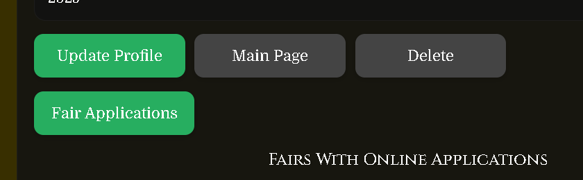
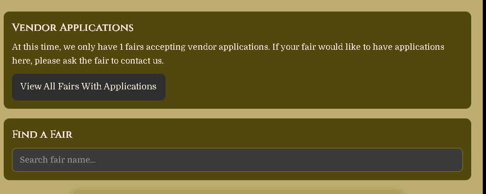
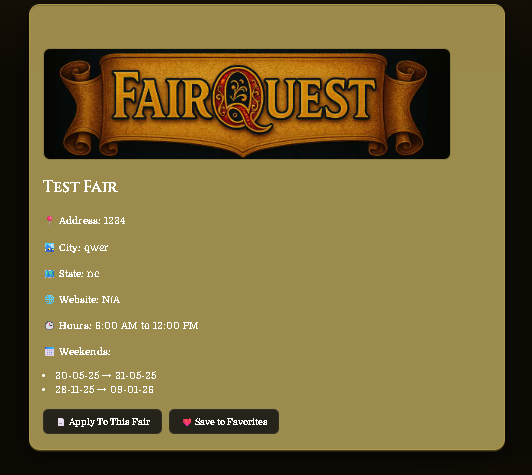

Which Fairs Accept Applications?
Not all fairs on FairQuest accept applications through the website. If a fair has not set up an application form with FairQuest, you will not see an Apply button on their page.
💡 How to find fairs accepting applications
From your dashboard, click Fair Applications. You'll see how many fairs are currently accepting your application type, and you can search by name or browse the full list.
How to Apply to a Fair
Go to Fair Applications From Your Dashboard
From your Vendor or Performer Dashboard, click the Fair Applications button. This page shows you how many fairs are currently accepting applications for your type, and lets you search for a specific fair.

Find Your Fair
You can either search for a fair by name using the search box, or click View All Fairs With Applications to browse the full list of fairs currently accepting applications. Click on a fair to go to its detail page.

Click "Apply To This Fair"
On the fair's detail page, click the Apply To This Fair button. You must be logged in and have an approved vendor or performer profile to see this button.

Read & Accept the Contract
Before you can fill out the application, you must read the fair's contract carefully. It includes rules, booth fees, conduct requirements, and cancellation policies. Check the box to confirm you have read and accept the contract — the application form will unlock after you do this.

Select Your Profile
If you have more than one approved vendor or performer profile, you'll be able to choose which one to use for this application. If you only have one profile it will be selected automatically.
Answer the Fair's Questions & Select Weekends
Each fair has its own custom application form with questions specific to their event — things like booth size, setup requirements, or what you sell. Answer all required questions marked with an asterisk (*).
If the fair runs multiple weekends, you'll also be able to select which ones you plan to attend by checking the box next to each date.

Review & Submit Your Application
When all required fields are filled in, click Review My Application. You'll see a summary of everything before it's submitted. If anything looks wrong, go back and fix it. When you're ready, click Submit.
Check Your Application Status
After submitting, go back to Fair Applications on your dashboard to see the status of all your fair applications. Statuses include:
• In Review — the fair owner is reviewing your application.
• Approved — congratulations! The fair has accepted you.
• Declined — the fair was not able to accept your application this time.